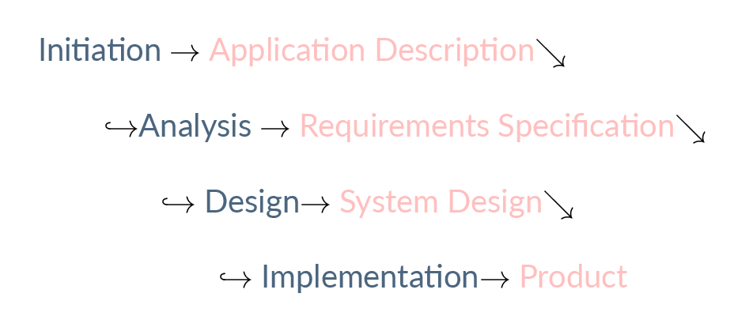
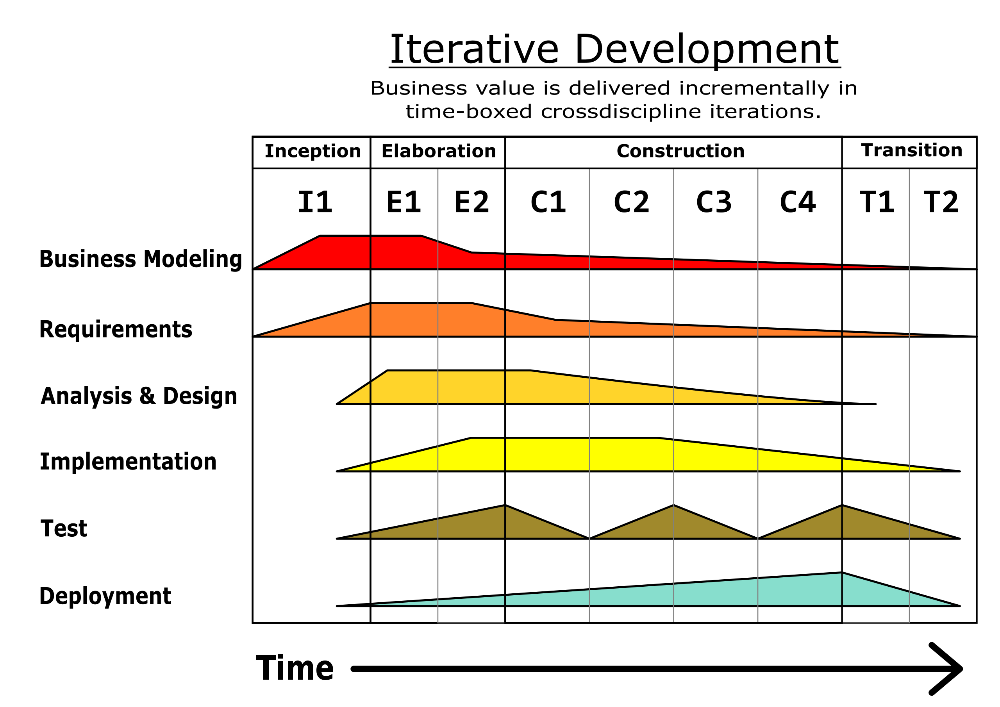

UCD and Agile
Mick McQuaid
2022-07-10
Intro
Most of this material comes from a NordiCHI conference workshop on UCD and Agile, documented in Cockton et al. (2016).
What is UCD (User Centered Design)?
- When did it start?
- What was the software environment in which it began?
- How has it developed?
- How can it be integrated with Agile development?
Some facts about UCD
- It started in the eighties, as a result of plummeting hardware costs, leading to the rise of casual users
- Software engineering at the time was concerned with the software artifact, not users, and waterfall processes dominated the landscape
- Its initial focus was usability, later defined by ISO 9241 as “the extent to which a product can be used by specified users to achieve specified goals with effectiveness, efficiency and satisfaction in a specified context of use”
- The above definition grew and developed over time
Still later, UCD embraced UX
- UI ⇒ user interface, focused on the human-computer interaction
- UX ⇒ user experience, more broadly focused on the user’s world
Early Challenges for UCD
- The phased approach of waterfall methods meant that UCD had to find a place in each phase (not easy)
- UCD fit better into an iterative approach than a phased approach
- UCD activities like Contextual Inquiry fit into the problem analysis phase
- UCD activities like user testing fit the verification phase
Waterfall phases
- problem analysis
- requirements specification
- design
- implementation
- verification
- operation
A waterfall picture

Iterative software development

Iterative software development
- It is less risky, but more expensive, to iterate
- The iterative process is design, build, test, over and over
- Why is it less risky?
- Why is it more expensive?
UCD Today
- A major approach to UCD is goal-directed design
- It’s exemplified by Cooper et al. (2014)
- It’s covered in I320U Information and Interaction Design
Enter Agile
What is Agile?
- First and foremost, it is a manifesto, posted in 2001, featuring twelve principles
- Everybody and his brother loved the manifesto
- Pretty soon, everybody and his brother started saying they were Agile
- Agile started to lose meaning
- Let’s try to capture some of that meaning
Agile software development principles (1)
- Customer satisfaction by early and continuous delivery of valuable software.
- Welcome changing requirements, even in late development.
- Deliver working software frequently (weeks rather than months)
- Close, daily cooperation between business people and developers
Agile software development principles (2)
- Projects are built around motivated individuals, who should be trusted
- Face-to-face conversation is the best form of communication (co-location)
- Working software is the primary measure of progress
- Sustainable development, able to maintain a constant pace
Agile software development principles (3)
- Continuous attention to technical excellence and good design
- Simplicity—the art of maximizing the amount of work not done—is essential
- Best architectures, requirements, and designs emerge from self-organizing teams
- Regularly, the team reflects on how to become more effective, and adjusts accordingly
What agile looks like
Collaboration between
- Cross-functional teams
- Self-organizing teams
- Users / Stakeholders on the team
Focus on
- flexibility
- early delivery
- continuous improvement
Further reading on Agile
Vastly many agile processes and practices are documented on Wikipedia’s Agile Software Development page, including the following diagram of one attempt to merge the best parts of agile and waterfall.

Major Concerns with Agile
- Cultures
- Teams
- Tasks
- Work per iteration
Agile + UCD
Compatibility
- evolving requirements
- incremental development
- close collaboration with customer reps
Incompatibility
- reduced opportunities for user testing
- less upfront planning before software implementation
Best practices from NordiCHI
Four themes
The following slides review the four themes that coalesced at the NordiCHI workshop:
- Culture
- Teams
- Tasks
- Research
Cultural differences
- What constitutes a valid problem and what can be ignored
- What resources are provided and how allocated
- Adequacy and excellence in design work
Agile and UCD Values, first Agile
- Self-empowered independent autonomous teams
- working software that customers accept
- customer collaboration
- rapid reaction to feedback
- velocity
- visibility, awareness, accountability
- productivity without interruption
- clear roles, short term goals (not vague and fuzzy)
- low waste
- being fashionable
Agile and UCD Values, next UCD
- iterative processes and tools to support planning of comprehensive user-focused research and objective empirical evaluation
- well documented evidence and data analysis
- understanding users before software development
- coherent, holistic picture of what will be developed
- superior expert knowledge of HCI
- attention to detail
- satisfied users
Recall the values from the Manifesto
- Individuals and interactions over processes and tools
- Working software over comprehensive documentation
- Customer collaboration over contract negotiation
- Responding to change over following a plan
Note the nature of the four preceding pairs
- They are matters of degree
- You should favor the left side, but how much?
- Crudest solution would be to make the LHS simple rules, as follows
Crude rules that could follow from the four pairs
- Just have individuals and interactions: no need for processes and tools
- Just make working software and no documentation
- Just collaborate: no need for a contract
- Just keep responding to change with no plan
Good news about culture
- Only half the Agile Manifesto rules could block UCD
- Compromises are possible, even with those
- Other values, such as safety and security and inclusiveness, are important and outside the possible Agile / UCD tension
Culture and methodology
References
Cockton, Gilbert, Marta Lárusdóttir, Peggy Gregory, and Åsa Cajander. 2016. Integrating User-Centred Design in Agile Development. Cham, Switzerland: Springer.
Cooper, Alan, Robert Reimann, David Cronin, and Christopher Noessel. 2014. About Face 4.0: The Essentials of Interaction Design. Indianapolis, IN: Wiley.
END
Colophon
This slideshow was produced using quarto
Fonts are League Gothic and Lato